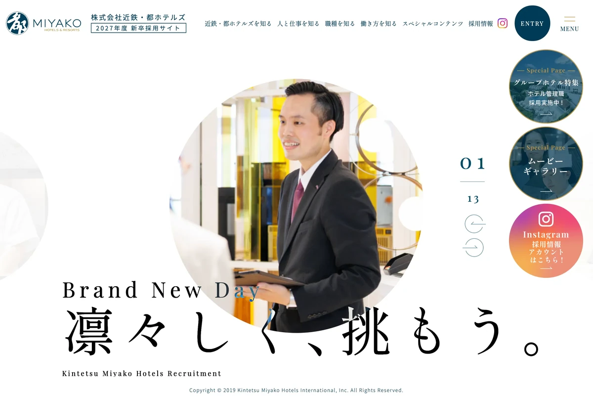
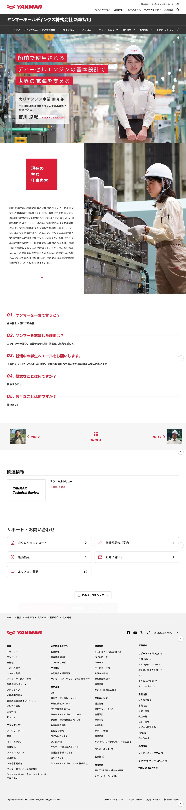

SOWAKA
1200 × 7694 px
WebPを保存2026年11月18日撮影・横幅1200px。画像を押すとページ全体を確認できます。
保存済み：9サイト。SHIGATSUSHAは撮影環境から接続できず未保存です。現在のポートフォリオのリンクは変更していません。
1200 × 7694 px
WebPを保存
1200 × 3358 px
WebPを保存
1200 × 5962 px
WebPを保存1200 × 13802 px
WebPを保存
1200 × 2363 px
WebPを保存
1200 × 900 px
WebPを保存
1200 × 7277 px
WebPを保存
1200 × 8828 px
WebPを保存
1200 × 7185 px
WebPを保存